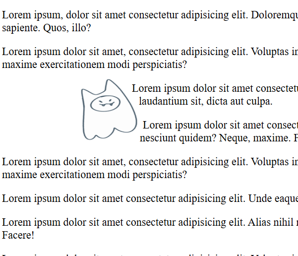

Reading through the chapters, I learned that text doesn't have to plainly wrap around an image, and that CSS allows for text to follow shapes, which helps create visual interest and more freedom with layouts. I think it's a great feature especially when you want certain text to pair up with an image, without having it look flat or get lost within a sea of other text. It definitely makes images feel more integrated as well, and even though it can make text a bit less readable in my opinion, it has its benefits.
I tried out the styling for myself, using a simple png image I made myself. I used url () to make the text follow the shape of the transparency, and it worked, even though it's not very noticeable. I really like how extensive the styling is, with options to do set shapes or customize a complex path with “polygon ()”. It’s hard to see many use cases especially with how structured and clean many websites are today but I think it's a great tool to have for more fun and personal work.
